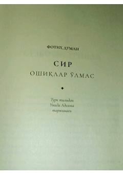

S1Qalb, ishq va hayot sirlari haqida ta'sirli falsafiy hikoya.
Ushbu asar inson qalbi, ishq, sir va hayot mazmuni haqidagi kechinmalarni o'quvchiga samimiy tarzda ochib beradi. Muallif hayotiy o'ylar, o'lim va muhabbat tushunchalarini o'ziga xos falsafiy yondashuvda hikoya qiladi. Kitob o'quvchini o'z ichki olami bilan yuzlashishga va chuqur mulohaza yuritishga undaydi.